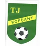
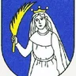

Posledný zápasU19 · IV. liga U19 ZsFZ, 13. kolo
 FC Družstevník Rybky (domáci)
FC Družstevník Rybky (domáci)Výsledok 5:1
· Rybky · prehra
Návrh webu · nie je to oficiálna stránka klubu
IV. liga U19 ZsFZ · 10. miesto z 13 · tréner Tomáš Miča
Posledný zápasU19 · IV. liga U19 ZsFZ, 13. kolo
FC Družstevník Rybky (domáci)Výsledok 5:1
· Rybky · prehra
3–0–9výhry, remízy, prehry · skóre 19:72
IV. liga U19 ZsFZ
| # | Tím | Z | V | R | P | Skóre | B |
|---|---|---|---|---|---|---|---|
| 1 | 12 | 11 | 1 | 0 | 72:5 | 34 | |
| 2 | 12 | 9 | 1 | 2 | 100:23 | 28 | |
| 3 | 12 | 8 | 1 | 3 | 74:30 | 25 | |
| 4 | 12 | 7 | 3 | 2 | 33:26 | 24 | |
| 5 | 12 | 8 | 0 | 4 | 59:37 | 24 | |
| 6 | 12 | 7 | 1 | 4 | 64:23 | 22 | |
| 7 |  TJ Kopčany | 12 | 7 | 1 | 4 | 47:49 | 22 |
| 8 | 12 | 3 | 2 | 7 | 35:52 | 11 | |
| 9 | 12 | 2 | 3 | 7 | 37:41 | 9 | |
| 10 | 12 | 3 | 0 | 9 | 19:72 | 9 | |
| 11 | 12 | 2 | 3 | 7 | 23:53 | 9 | |
| 12 | 12 | 2 | 2 | 8 | 22:58 | 8 | |
| 13 |  TJ Družstevník Trnovec | 12 | 0 | 0 | 12 | 9:125 | 0 |
Hráči, ktorí v roku 2026 nastúpili alebo boli v nominácii (Sportnet). Pri mládeži len mená.